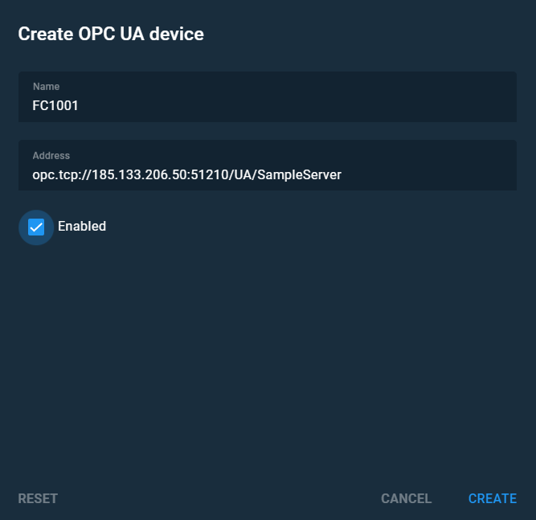

Create an OPC UA device#
This task will help you with creating an OPC UA device.
- Open the View tags menu.
- Click the Create OPC UA device icon
-
In the Create OPC UA device menu, specify:
3.1. Name of the device
3.2. Address: you should specify URI of your OPC UA server.
Note
Read OPC Unified Architecture Specification Part 3: Address Space Model for more information about addressing model of OPC UA.
 Figure 1. OPC UA device configuration menu -
Put the Enable flag on, to activate the device.
- Click Create to finish the task.
Related articles:
- OPC UA devices
OPC UA devices and their parameters. - OPC UA tag editor
This article is about OPC UA tags and their parameters which you can change in the editor. - Tag general settings
In this article, you can find short descriptions of tag general settings. - Tag history settings
Briefly about History settings menu. - View tags
You can read about settings of tags and alarms in this article.
Related task
- Create an OPC UA tag
This task will help you with creating an OPC UA device.